Operator-Programista CNC
Kurs stacjonarny w Rzeszowie, od podstaw: frezarki i tokarki, sterowania Sinumerik, Fanuc, Heidenhain i Mazatrol. Program zatwierdzony przez Podkarpackie Kuratorium Oświaty.
Szczegóły kursuUczę obsługi i programowania obrabiarek CNC tak, jak sam chciałem się uczyć: w małych grupach, z dużą liczbą samodzielnych ćwiczeń przy maszynie. Za mną 9 lat pracy jako operator CNC przy produkcji części lotniczych.
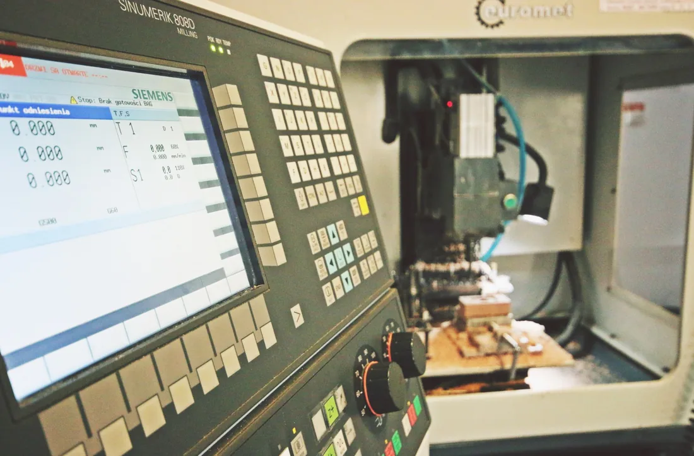
Pracownia CNC MODERN, Sinumerik 808D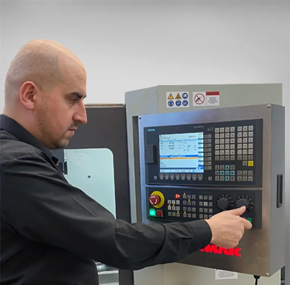
Moja przygoda z CNC zaczęła się w 2005 roku od kursu, po którym nie umiałem ustawić przesunięcia punktu zerowego ani zmierzyć narzędzia. Grupa liczyła 12 osób, praktyki było mało. Tego wszystkiego nauczyłem się dopiero w pracy, przy produkcji komponentów lotniczych.
Od 2010 roku dzielę się tą wiedzą jako trener i robię to inaczej niż kiedyś uczono mnie: konkretne przykłady, dużo samodzielnej pracy i zajęcia w małych grupach. Pomagam też w znalezieniu zatrudnienia, bo współpracuję z wieloma firmami produkcyjnymi.
„Minimum teorii, maksimum praktyki”
Kursy prowadzę w CNC MODERN, niepublicznej placówce kształcenia w Rzeszowie. Po kursie otrzymujesz zaświadczenie MEiN oraz certyfikat TÜV Rheinland.
Kurs stacjonarny w Rzeszowie, od podstaw: frezarki i tokarki, sterowania Sinumerik, Fanuc, Heidenhain i Mazatrol. Program zatwierdzony przez Podkarpackie Kuratorium Oświaty.
Szczegóły kursuNauka w formie e-learningowej i hybrydowej, z materiałami i zadaniami do samodzielnego wykonania. Dla osób, które nie mogą dojeżdżać do Rzeszowa.
Szczegóły kursuZajęcia jeden na jeden, w Twoim tempie i z naciskiem na to, czego potrzebujesz w pracy: od ustawienia maszyny po programowanie.
Szczegóły kursuProgramowanie obróbki w systemie CAD/CAM ZW3D, z autorskim podręcznikiem dla uczestników. Jestem certyfikowanym trenerem ZW3D.
Szczegóły kursuCzytanie dokumentacji, pomiary warsztatowe i kontrola jakości. Dobre uzupełnienie kursu CNC i przygotowanie do stanowiska kontrolera.
Szczegóły kursuSzkolenia operatorów w zakładzie, pomoc w rekrutacji pracowników i doradztwo techniczne. Także w ramach KFS i projektów unijnych.
Szczegóły szkoleńul. Stefana Batorego 15: sala wykładowa, frezarki i tokarki CNC, przyrządy pomiarowe
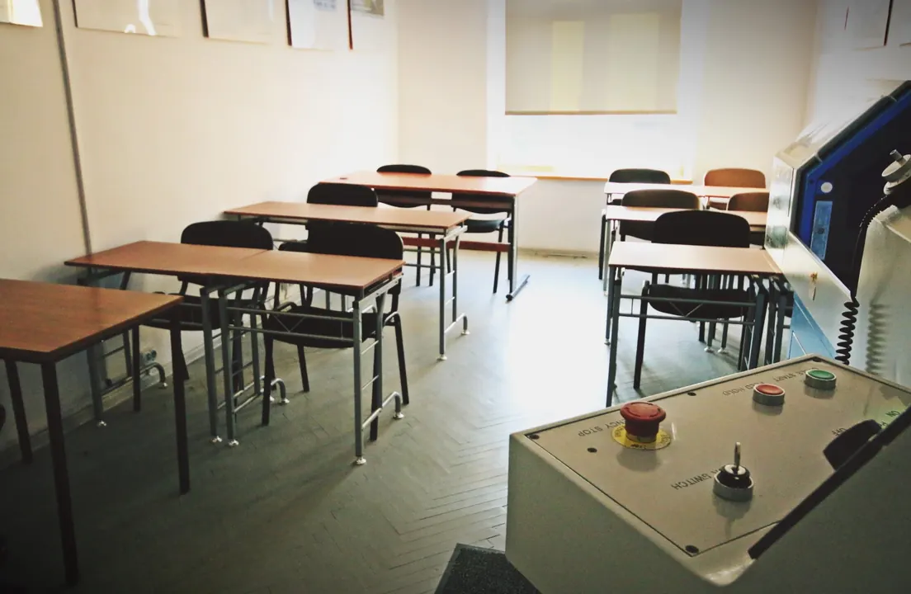
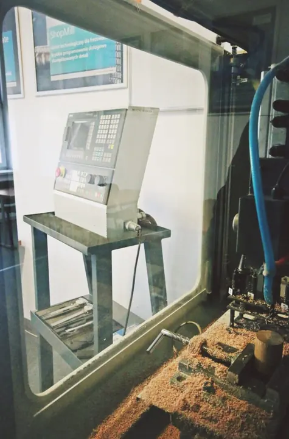
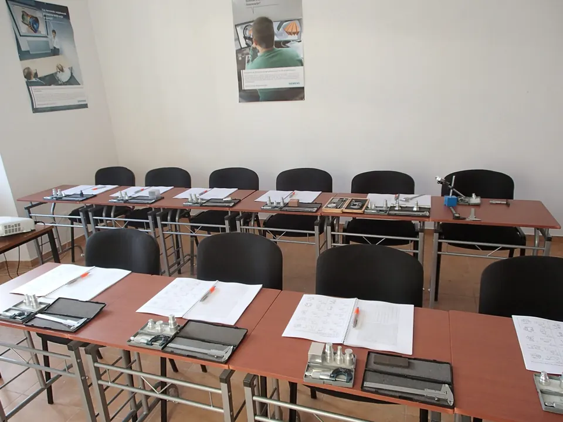
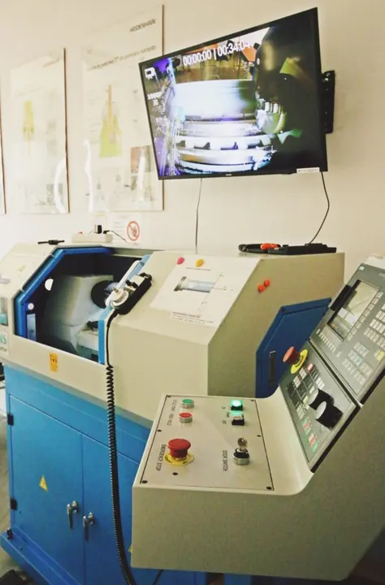
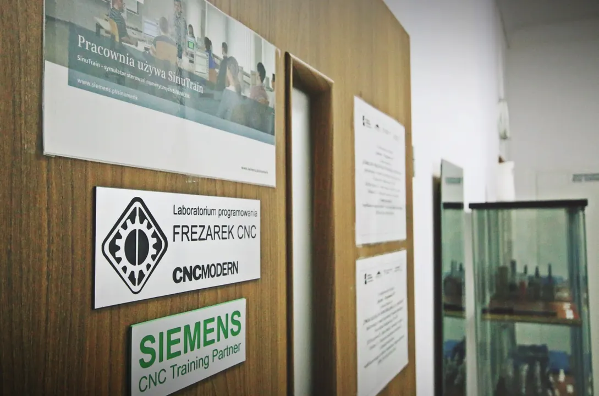
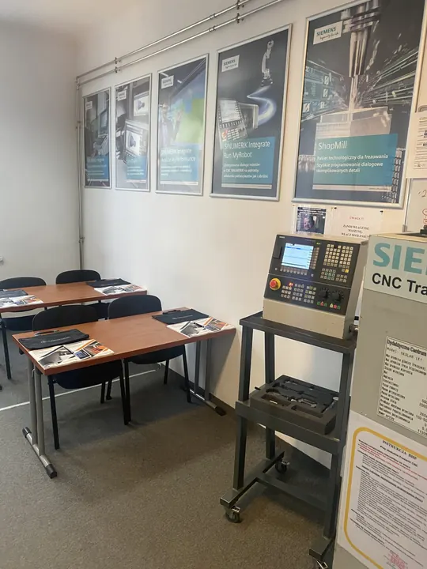
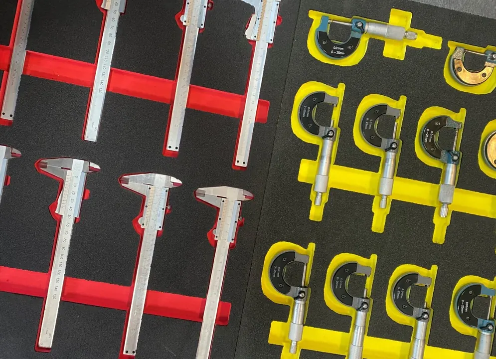
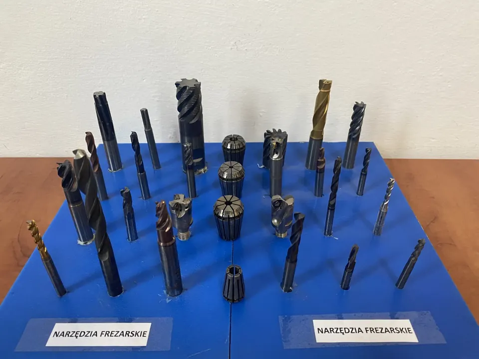
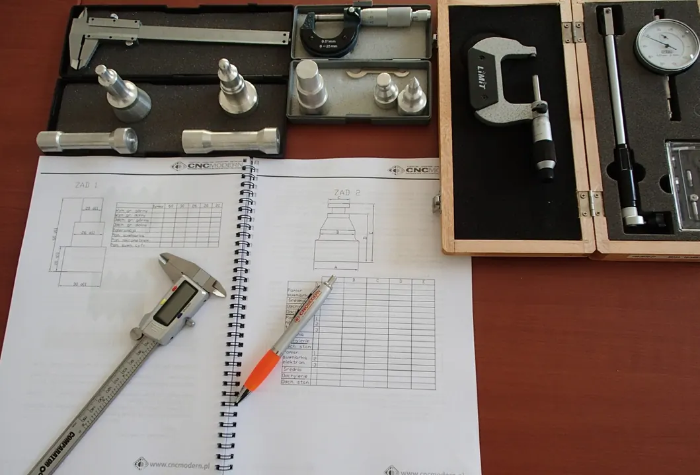
Jako trener muszę nadążać za nowymi technologiami, dlatego co roku biorę udział w warsztatach organizowanych przez Siemens.
SIEMENS CNC Trainer, SIEMENS Train the Trainer, ACE Certification Program, kurs pedagogiczny, trener ZW3D
SIEMENS CNC Training Partner, wpis do rejestru szkół i placówek oświatowych, akredytacja Kuratorium Oświaty, ISO 9001, TÜV Rheinland
Na początku nauki brakowało mi literatury, w której wiedza o CNC byłaby podana jasno i prosto. Dlatego napisałem własne materiały, od podręcznika po darmowy e-book.
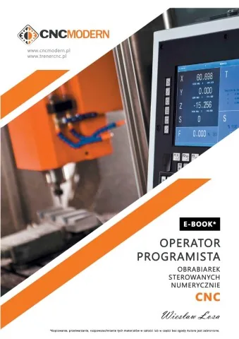
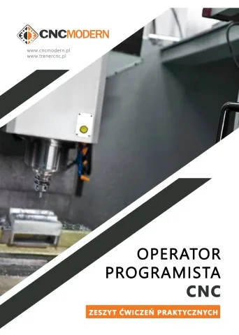
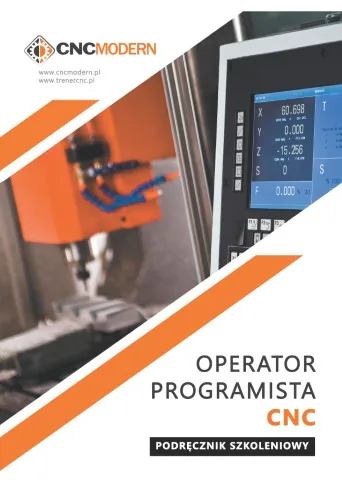
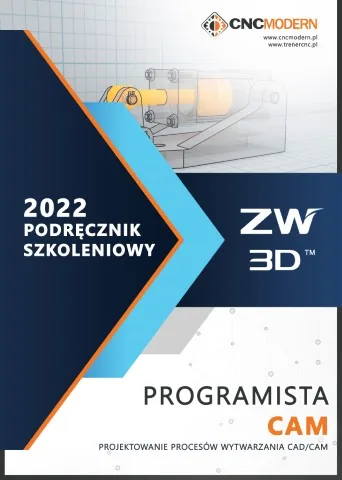
CNC MODERN w Google: 272 opinie, ocena „doskonała”
„Duża wiedza praktyczna i teoretyczna prowadzącego, profesjonalne podejście do kursantów. Na kurs przyjechałem z Pomorza i mimo, że była to moja pierwsza styczność z CNC, są to jedne z najlepiej wydanych pieniędzy.”
Krzysztof K.Pomorze
„Profesjonalne i indywidualne podejście do kursanta. Wykładowca z kulturą osobistą i bogatym doświadczeniem zawodowym. Sprzęt wysokiej klasy oraz materiały dydaktyczne.”
Dawid Ż.Rzeszów
„Wiedza przekazywana w prosty i zrozumiały sposób. Praktyki na nowoczesnych frezarkach i tokarkach. Świetna atmosfera. Wszystkim serdecznie polecam!”
Przemysław D.Rzeszów
„Fajna atmosfera podczas zajęć, fachowa wiedza teoretyczna i praktyczna przekazana w zrozumiały sposób. Świetna lokalizacja. Bardzo polecam!”
Mateusz F.Rzeszów
Pomogę dobrać kurs do Twojego doświadczenia. Najlepiej napisz wiadomość, bo przy maszynie nie zawsze mogę odebrać telefon. Odpowiadam najpóźniej w ciągu 48 godzin.
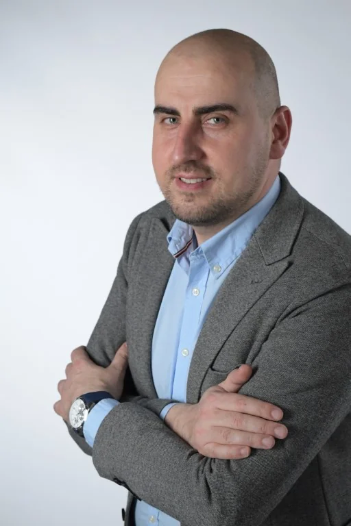